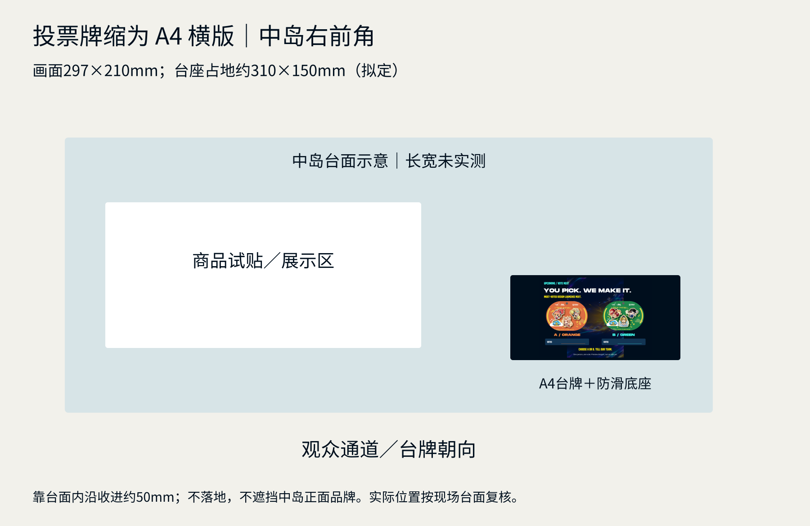
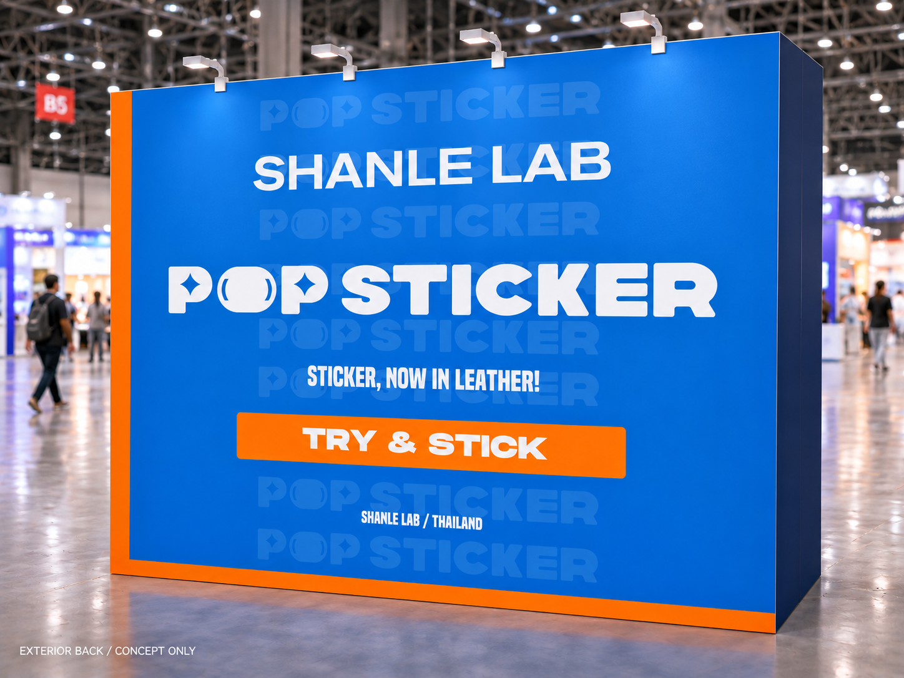

SHANLE LAB / MLBB THAILAND / v10 / 已生成 · 待评审
投票缩到台面。
中岛右前角，朝向观众。
A2大板不采用。改为A4横版画面297×210mm，含底座拟约310×150mm，放中岛右前角，靠台面内收约50mm。观众指选橙色A或绿色B，工作人员登记，牌面更新累计票数；每人一票为执行提案，尚未开放投票。
生成式空间图用于看位置和尺度。精确Logo、包装轮廓与正式文案以原资产平面稿为准；主形象墙沿用，未改成MLBB墙。
A4台牌与摆位
A4台牌 PDF · 297×210mm · 矢量SVG · 小台牌计票执行方式

摆位图中岛轮廓为示意，并非台面实测图。底座尺寸、固定方式及台面剩余空间需现场复核；台牌底座设置防滑，不占落地通道。
背面方向 · 暂按墙体朝外背板理解
“摊位背面”所指尚待澄清。本方向暂按主墙朝外的背面理解，用SHANLE LAB／POP STICKER原Logo与蓝橙识别；内部主形象墙与右墙功能不变。该图不作为用户已确认的新背板或施工尺寸。

外背板画面以已有2700×2200mm主墙尺寸为拟合参考；实际外表面、墙厚与结构安装需实测。此为方向稿，尚未送印、安装或选择。
v09两张A1海报 · 总版800／机会赢601钻（两张海报保持，不沿用其A2投票板尺寸）。